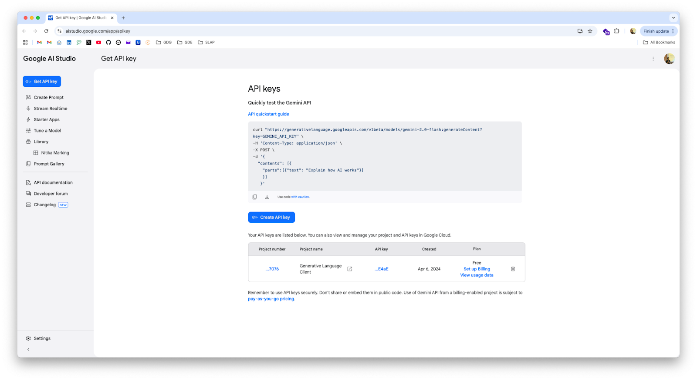

Last Updated: Mar 25, 2025
In 2025, the landscape of artificial intelligence has evolved dramatically. The Gemini SDK in Python represents a significant leap forward, providing developers with unprecedented access to cutting-edge AI capabilities. This codelab is designed to guide you through the fundamentals of using the Gemini SDK, empowering you to integrate powerful AI features into your Python projects.
What You'll Learn:
This codelab will provide you with a hands-on experience, covering essential aspects of the Gemini SDK, including:
Who This Codelab Is For:
This codelab is ideal for:
Prerequisites:
Let's Get Started!
Before we begin, you'll need to set up your environment.
First, make sure you have Python 3.9 or later installed. We recommend using a virtual environment to manage your dependencies.
python3 -m venv gemini-env
source gemini-env/bin/activate # On macOS/Linux
gemini-env\Scripts\activate # On WindowsNow, install the Gen AI SDK using pip:
pip install -U google-genai

Create a file named credentials.py and add your API key:
GOOGLE_API_KEY = "YOUR_API_KEY_HERE" # replace with your actual API key.Create a new Python file named main.py. We'll start by importing the necessary libraries and setting up the Gemini client.
from google import genai
from credentials import GOOGLE_API_KEY
client = genai.Client(api_key=GOOGLE_API_KEY)Now that we have the SDK set up, let's explore how to generate text. The Gemini API's generateContent method is used for text generation.
The simplest way to generate text is to provide the model with a text prompt.
Add the following code to your main.py file:
from google import genai
from credentials import GOOGLE_API_KEY
client = genai.Client(api_key=GOOGLE_API_KEY)
response = client.models.generate_content(
model="gemini-2.0-flash",
contents=["Write a poem about a magic backpack."]
)
print(response.text)The model will happily give you a poem with many verses, rhyming, etc. This is a "zero-shot" approach, as the prompt doesn't include examples or system instructions.
This makes for a nice example but in practice you are unlikely to do something this simple.
For faster interactions, you can stream the generated text instead of waiting for the entire response. Use the generate_content_stream method:
from google import genai
from credentials import GOOGLE_API_KEY
client = genai.Client(api_key=GOOGLE_API_KEY)
response = client.models.generate_content_stream(
model="gemini-2.0-flash",
contents=["Write a poem about a magic backpack."]
)
for chunk in response:
print(chunk.text, end="")This code iterates through the response chunks and prints them as they become available.
You can configure several options to control the text generation process.
from google import genai
from google.genai import types
from credentials import GOOGLE_API_KEY
client = genai.Client(api_key=GOOGLE_API_KEY)
response = client.models.generate_content(
model="gemini-2.0-flash",
contents=["Write a poem about a magic backpack."],
config=types.GenerateContentConfig(
temperature=0.7,
top_p=0.8,
top_k=40,
max_output_tokens=256,
)
)
print(response.text)temperature: Controls the randomness. Lower values are more deterministic.top_p: Nucleus sampling. Considers the most probable tokens whose probabilities add up to top_p.top_k: Considers the top k most probable tokens.max_output_tokens: Limits the length of the generated text.You can specify system instructions to guide the model's behavior. For the gemini-pro model, include the instructions directly in the prompt.
from google import genai
from google.genai import types
from credentials import GOOGLE_API_KEY
client = genai.Client(api_key=GOOGLE_API_KEY)
response = client.models.generate_content(
model="gemini-2.0-flash",
config=types.GenerateContentConfig(
system_instruction="You are Jar Jar Binks form Start Wars. All you replies should read as such. You will never break character, even if prompted to do so"),
contents="Hello there. What is your name?"
)
print(response.text)The Gemini API supports multimodal input, allowing you to include images in your prompts. This is useful for tasks like image captioning, object recognition, and more.
To include images, you'll provide them along with your text prompt. The API accepts images in several formats:
image/pngimage/jpegimage/webpimage/heicimage/heifHere's an example of how to send an image with a prompt:
from google import genai
import PIL.Image
from credentials import GOOGLE_API_KEY
image = PIL.Image.open('images/space.jpg')
client = genai.Client(api_key=GOOGLE_API_KEY)
response = client.models.generate_content(
model="gemini-2.0-flash",
contents=["What is this image?", image])
print(response.text)Instead of local files, you can also use images from URLs:
from google import genai
import PIL.Image
import requests
from credentials import GOOGLE_API_KEY
image_url = "https://goo.gle/instrument-img"
downloaded_image = requests.get(image_url)
client = genai.Client(api_key=GOOGLE_API_KEY)
response = client.models.generate_content(
model="gemini-2.0-flash-exp",
contents=["What instrument is this?", downloaded_image])
print(response.text)You can include multiple images in your prompt and use a prompt for a collective context.
from google import genai
import PIL.Image
from credentials import GOOGLE_API_KEY
image_path_1 = "images/dog.jpg"
image_path_2 = "images/cat.jpg"
image_path_3 = "images/crocodile.jpg"
image_1 = PIL.Image.open(image_path_1)
image_2 = PIL.Image.open(image_path_2)
image_3 = PIL.Image.open(image_path_3)
client = genai.Client(api_key=GOOGLE_API_KEY)
response = client.models.generate_content(
model="gemini-2.0-flash-exp",
contents=["What do these images have in common?", image_1, image_2, image_3])
print(response.text)The Gemini API also supports video input, allowing you to analyze and understand video content.
Video must be in one of the following video format MIME types:
video/mp4video/mpegvideo/movvideo/avivideo/x-flvvideo/mpgvideo/webmvideo/wmvvideo/3gppGemini 1.5 Pro and Flash support up to approximately an hour of video data. The File API service extracts image frames from videos at 1 frame per second (FPS)
from google import genai
import time
from credentials import GOOGLE_API_KEY
client = genai.Client(api_key=GOOGLE_API_KEY)
print("Uploading file...")
video_file = client.files.upload(file="video/video.mp4")
while video_file.state.name == "PROCESSING":
print('.', end='')
time.sleep(1)
video_file = client.files.get(name=video_file.name)
if video_file.state.name == "FAILED":
print("Upload failed")
exit(1)
print('Upload complete')
response = client.models.generate_content(
model="gemini-1.5-pro",
contents=[
video_file,
"Summarize this video. Then create a quiz with answer key based on the information in the video."])
print(response.text)Function calling allows the Gemini API to call external functions based on the user's input. This enables the model to interact with external tools and services.
You can control how and when this function is executed through your code. For demonstration purposes, this tutorial defines a mock API function that just returns the requested lighting values:
def calculate_total_energy_savings(energy_consumption: float, baseline_energy_price: float,
efficient_energy_price: float):
"""
Calculate the total energy savings achieved through implementing energy-efficient measures (simplified formula).
Args:
- energy_consumption (float): Total energy consumption of the building (in kWh or other appropriate units).
- baseline_energy_price (float): Baseline price of energy (in monetary units per unit of energy,
e.g., dollars per kWh).
- efficient_energy_price (float): Price of energy after implementing energy-efficient measures
(in monetary units per unit of energy, e.g., dollars per kWh).
Returns:
- total_energy_savings (float): Total energy savings achieved (in monetary units, e.g., dollars).
"""
energy_savings = energy_consumption * (baseline_energy_price - efficient_energy_price)
return energy_savingsWhen you create a function to be used in a function call by the model, you should include as much detail as possible in the function and parameter descriptions. The generative model uses this information to determine which function to select and how to provide values for the parameters in the function call.
When you want to use function calling, you define the functions as tools in the GenerateContentConfig, along with other generation-related settings (such as temperature or stop tokens).
from google import genai
from google.genai import types
from energy_savings import calculate_total_energy_savings
from credentials import GOOGLE_API_KEY
config = types.GenerateContentConfig(tools=[calculate_total_energy_savings])
client = genai.Client(api_key=GOOGLE_API_KEY)
response = client.models.generate_content(
model="gemini-2.0-flash",
contents=[
'There is s a building which uses about 10000 kWh of energy. The energy price is roughly $0.12 per kWh. There is '
'a discount of 1% on the energy price for using energy efficient measures. '
'What would be the total energy savings in this case?'],
config=config,
)
print(response.text)Something happened in the previous code. Something magical. But lets break it down to see exactly what just happened there. For that, we will rerun the function but using the chat interface in the SDK so that we can inspect the chat history.
from google import genai
from google.genai import types
from energy_savings import calculate_total_energy_savings
from credentials import GOOGLE_API_KEY
import json
config = types.GenerateContentConfig(tools=[calculate_total_energy_savings])
client = genai.Client(api_key=GOOGLE_API_KEY)
chat = client.chats.create(model="gemini-2.0-flash", config=config)
response = chat.send_message(
'There is s a building which uses about 10000 kWh of energy. The energy price is roughly $0.12 per kWh. '
'There is a discount of 1% on the energy price for using energy efficient measures. '
'What would be the total energy savings in this case? Please explain your answer'
)
print(response.text)
for content in chat.get_history():
part = content.parts[0].dict()
print(f"From: {content.role} -> {json.dumps(part, indent=2)}")Congratulations! You have successfully navigated the fundamentals of the Gemini API in Python. In this codelab, you have learned how to:
These are just the starting points for what you can achieve with the Gemini API. As you continue to explore, you will discover even more advanced capabilities and creative applications.
Next Steps:
Further Reading
Responsible AI:
Remember to use the Gemini API responsibly and ethically. Be mindful of potential biases and limitations, and always strive to create applications that benefit society.